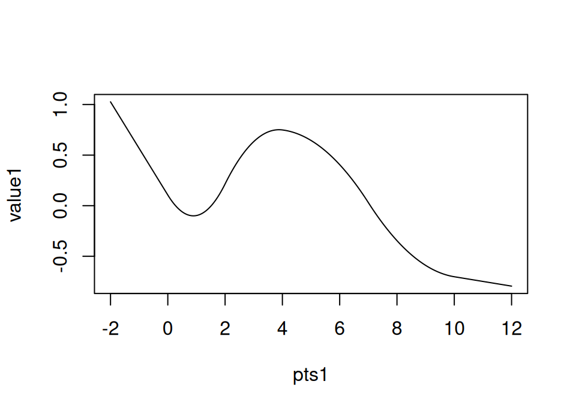
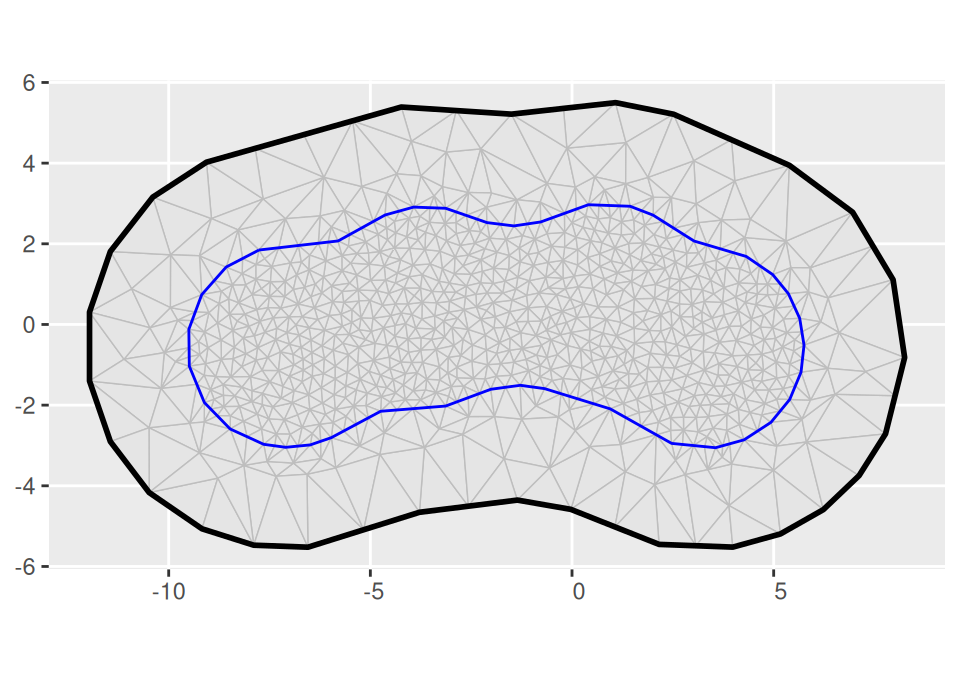
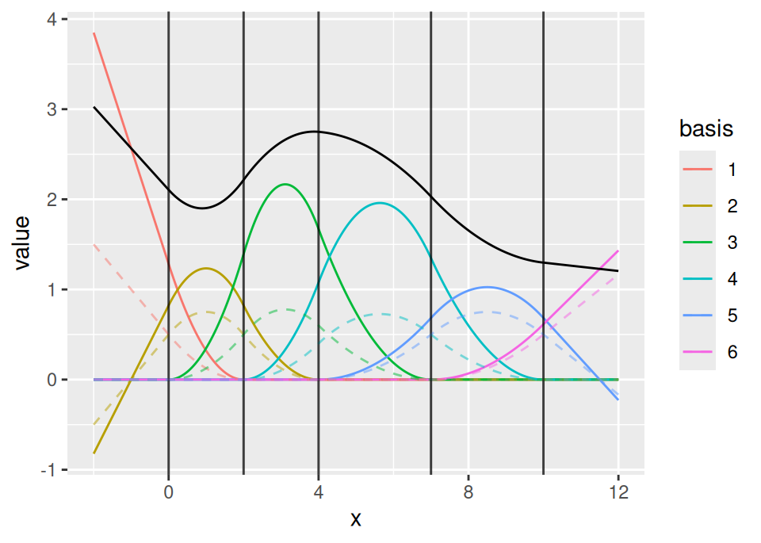
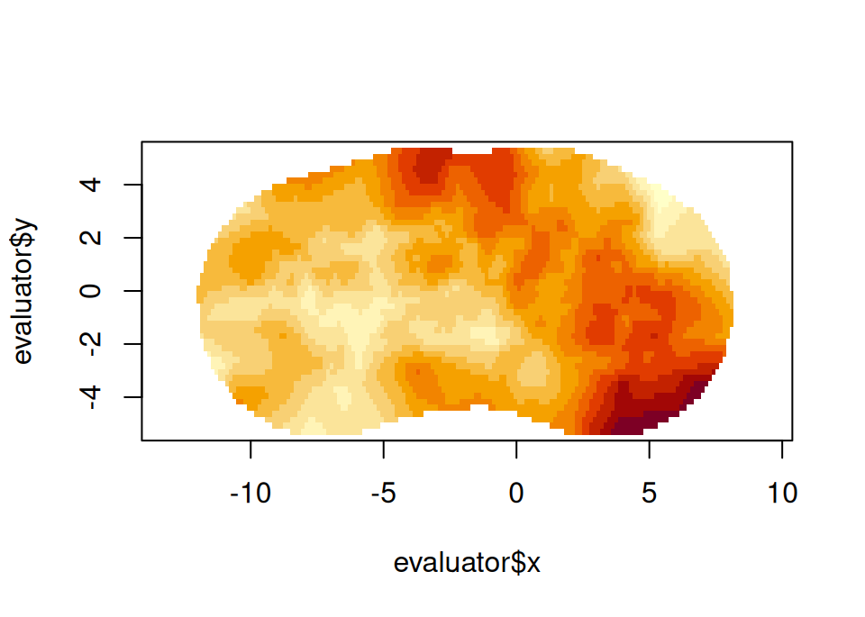

Mesh construction
domain <- cbind(rnorm(4, sd = 3), rnorm(4))
(mesh2 <- fm_mesh_2d(
boundary = fm_extensions(domain, c(2.5, 5)),
max.edge = c(0.5, 2)
))
#> fm_mesh_2d object:
#> Manifold: R2
#> V / E / T: 911 / 2685 / 1775
#> Euler char.: 1
#> Constraints: Boundary: 45 boundary edges (1 group: 1), Interior: 127 interior edges (1 group: 1)
#> Bounding box: (-11.976144, 8.248637) x (-5.528888, 5.506054)
#> Basis d.o.f.: 911
(mesh1 <- fm_mesh_1d(
c(0, 2, 4, 7, 10),
boundary = "free", # c("neumann", "dirichlet"),
degree = 2
))
#> fm_mesh_1d object:
#> Manifold: R1
#> #{knots}: 5
#> Interval: ( 0, 10)
#> Boundary: (free, free)
#> B-spline degree: 2
#> Basis d.o.f.: 6Point lookup and evaluation
pts <- cbind(rnorm(400, sd = 3), rnorm(400))
# Find what triangle each point is in, and its triangular Barycentric
# coordinates
bary <- fm_bary(mesh2, loc = pts)
head(bary)
#> # A tibble: 6 × 2
#> index where[,1] [,2] [,3]
#> <int> <dbl> <dbl> <dbl>
#> 1 1369 0.515 0.124 0.361
#> 2 491 0.818 0.157 0.0254
#> 3 1521 0.679 0.234 0.0876
#> 4 1275 0.465 0.144 0.392
#> 5 1054 0.785 0.158 0.0569
#> 6 1532 0.191 0.230 0.579
# How many points are outside the mesh?
sum(is.na(bary$index))
#> [1] 2
bary$where[is.na(bary$index), ]
#> [,1] [,2] [,3]
#> [1,] NA NA NA
#> [2,] NA NA NA
# Evaluate basis functions
basis <- fm_basis(mesh2, loc = pts) # Raw SparseMatrix
basis_object <- fm_basis(mesh2, loc = pts, full = TRUE) # fm_basis object
sum(!basis_object$ok)
#> [1] 2
# Construct an evaluator object
evaluator <- fm_evaluator(mesh2, loc = pts)
sum(!fm_basis(evaluator, full = TRUE)$ok)
#> [1] 2
# Values for the basis function weights; for ordinary 2d meshes this coincides
# with the resulting values at the vertices, but this is not true for e.g.
# 2nd order B-splines on 1d meshes.
field <- mesh2$loc[, 1]
value <- fm_evaluate(evaluator, field = field)
sum(abs(pts[, 1] - value), na.rm = TRUE)
#> [1] 4.604303e-14
pts1 <- seq(-2, 12, length.out = 1000)
# Find what segment, and its interval Barycentric coordinates
bary1 <- fm_bary(mesh1, loc = pts1)
# Points outside the interval are treated differently depending on the
# boundary conditions:
sum(is.na(bary1$index))
#> [1] 0
head(bary1)
#> # A tibble: 6 × 2
#> index where[,1] [,2]
#> <int> <dbl> <dbl>
#> 1 1 2 -1
#> 2 1 1.99 -0.993
#> 3 1 1.99 -0.986
#> 4 1 1.98 -0.979
#> 5 1 1.97 -0.972
#> 6 1 1.96 -0.965
# Evaluate basis functions
basis1 <- fm_basis(mesh1, loc = pts1) # Raw SparseMatrix
basis1_object <- fm_basis(mesh1, loc = pts1, full = TRUE) # fm_basis object
sum(!basis1_object$ok)
#> [1] 0
# Construct an evaluator object.
evaluator1 <- fm_evaluator(mesh1, loc = pts1)
# mesh_1d basis functions are defined everywhere
sum(!fm_basis(evaluator1, full = TRUE)$ok)
#> [1] 0
# Values for the basis function weights; for ordinary 2d meshes this coincides
# with the resulting values at the vertices, but this is not true for e.g.
# 2nd order B-splines on 1d meshes.
field1 <- rnorm(fm_dof(mesh1))
value1 <- fm_evaluate(evaluator1, field = field1)
plot(pts1, value1, type = "l")
Evaluated 1D function
Plotting
ggplot graphics
suppressPackageStartupMessages(library(ggplot2))
ggplot() +
geom_fm(data = mesh2)
2D triangulation mesh (ggplot version)
ggplot() +
geom_fm(data = mesh1, weights = field1 + 2, xlim = c(-2, 12)) +
geom_fm(data = mesh1, linetype = 2, alpha = 0.5, xlim = c(-2, 12))
1D B-spline function space basis functions with evaluated function (ggplot version)
Stochastic process simulation
samp <- fm_matern_sample(mesh2, alpha = 2, rho = 4, sigma = 1)[, 1]
evaluator <- fm_evaluator(
mesh2,
lattice = fm_evaluator_lattice(mesh2, dims = c(150, 50))
)
image(evaluator$x, evaluator$y, fm_evaluate(evaluator, field = samp), asp = 1)
Simulated 2D Matérn field